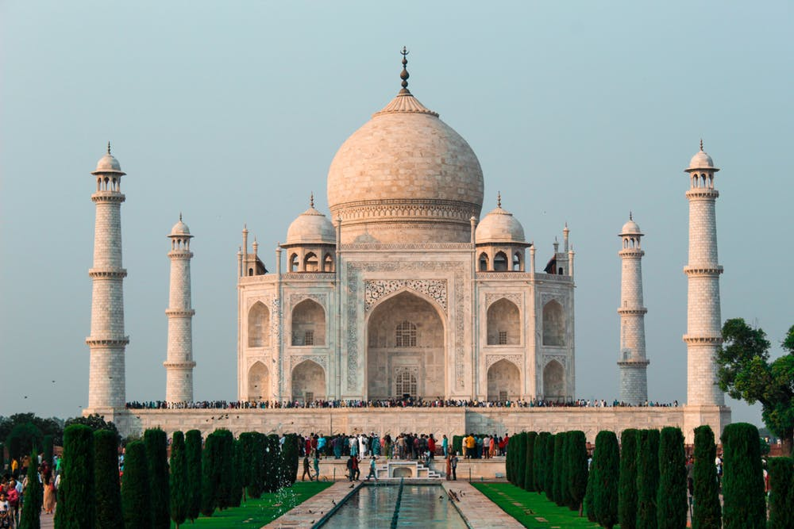

Historic and Iconic Wonders Around Our World
Scorll through the photos below to see the 7 wonders of the world.

Video Links on the Seven Wonders and other Historic Landmarks
- The New 7 Wonders of the World
- 5 Landmarks That Deserve To Be Called The 8TH WONDER Of The World
- 11 Historical Places That Are Lucky To Still Exist
Where are they located?
Below is a list of the 7 wonders. Each is located in a different country. Follow the links to learn more about these beautiful countries and what else you could see.